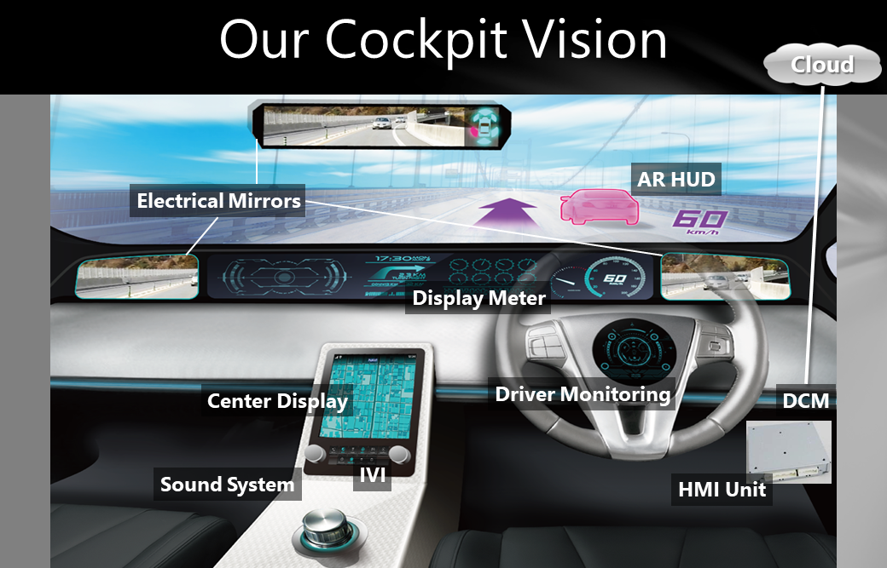
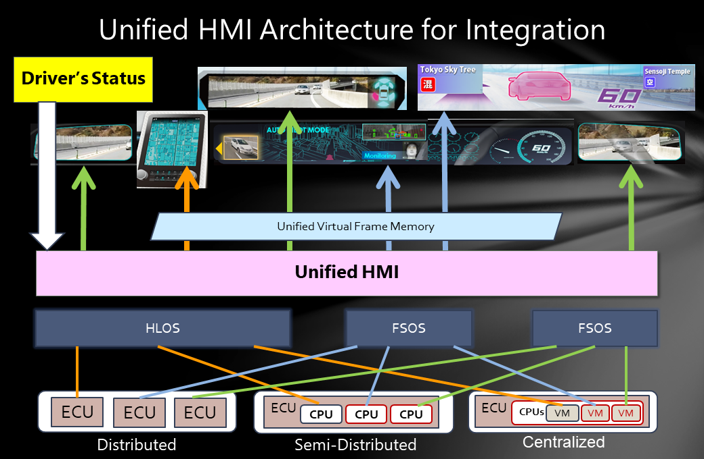

Welcome to Unified HMI¶
Vision¶
This software can realize the cockpit vision as shown in the picture below.
Total “Comfort & Safety” System with our AV&ICT Technology.
In this system, not only the center display, but also the rear mirrors, side mirrors and meters are digitized. In addition, the windshield displays augmented reality information.
By digitizing, this system can not only output the input of the camera etc. to the display, but also provide various added values by the intervention of “processing”, and can support safe driving.
Architecture¶
The architecture for realizing the above vision is shown in the figure below.
If an application wants to control multiple displays in combination with each other, the system controls each display by virtually consolidating the frame memory within the system. As a result, applications running on a particular subsystem can process and draw multiple displays at once, to the extent permitted by their privileges.
Loadmap¶
T.B.D.